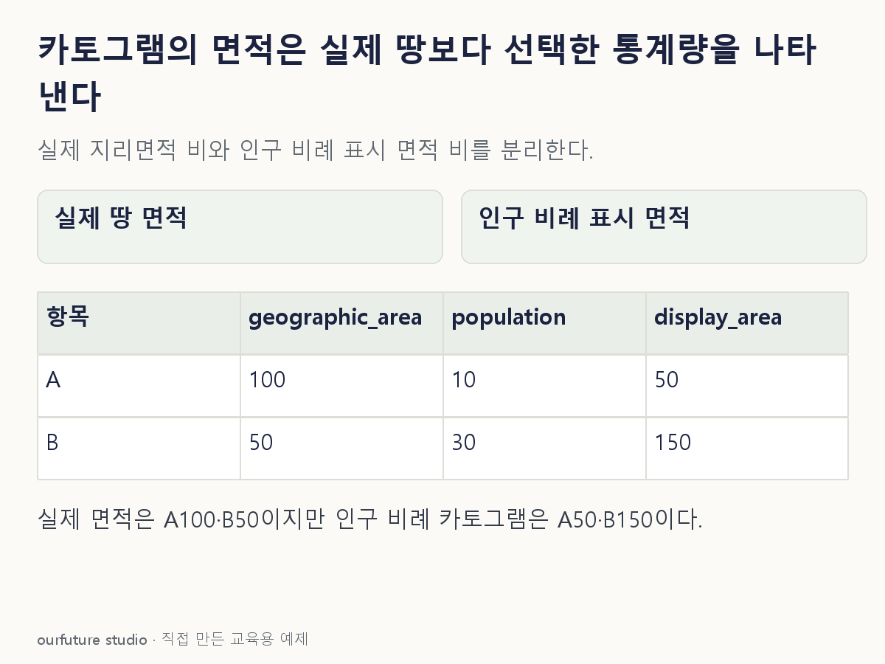

조건을 바꾸며 확인하기
양수 인구·동일 비례상수의 면적 산술이다. 실제 경계 변형 알고리즘을 실행하지 않는다.
설명 그림과 비교하기
아래 그림과 표는 고정된 설명 예제입니다. 기본·변형 중 어떤 조건인지 캡션을 읽고, 바꾼 입력의 결과는 계산 칸에서 확인하세요.

같은 문제를 직접 골라 보기
인구가 A는 10만 명, B는 30만 명인 두 지역을 인구 비례 면적의 카토그램으로 그린다. 같은 비례상수를 사용한다.
조건을 더 바꾸면?
인구만 A20만·B20만으로 바꾸고 같은 인구 비례 카토그램을 그린다. 표시 면적은 같으며 실제 땅 면적도 같아지는가?
변형 풀이 확인
표시 면적은 같지만 실제 땅 면적이 같아지는 것은 아니다.
선택 통계량이 같아져 같은 표시 면적을 배정할 뿐이다. 실제 지리 면적 100·50이라는 원자료의 의미를 바꾸지 않는다.
지도에서 큰 것이, 땅인가 사람인가.